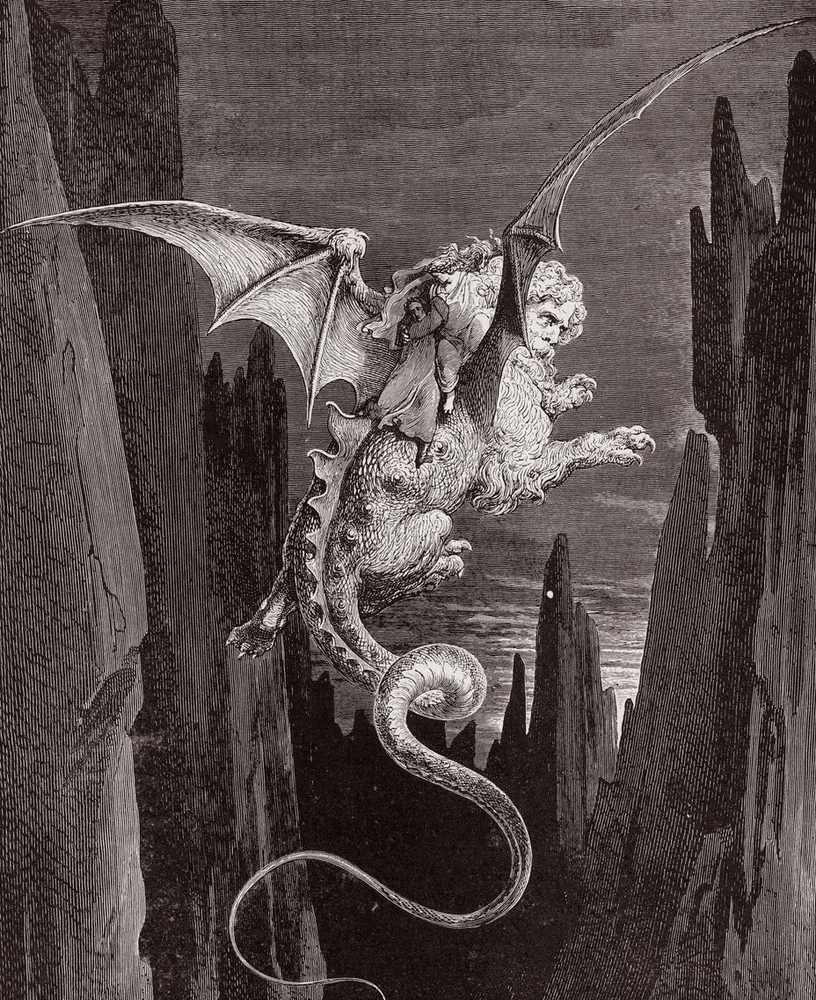

Sulla ripa del settimo cerchio appare Gerione, mostro mitologico simbolo della frode. Mentre Virgilio prende accordi con la fiera, Dante osserva i peccatori di usura, costretti a sedere sotto una pioggia di fuoco con borse stemmate al collo. Infine, i due poeti salgono sul dorso di Gerione, che li trasporta in volo giù nel profondo burrone verso l'ottavo cerchio.
I poeti raggiungono Malebolge, l'ottavo cerchio diviso in dieci fossati. Nella prima bolgia i ruffiani e i seduttori vengono frustati brutalmente dai demoni; tra loro Dante incontra Venedico Caccianemico e Giasone. Nella seconda bolgia, immersi nello sterco liquido, si trovano invece gli adulatori e i lusingatori, tra cui Alessio Interminei e Taide.
